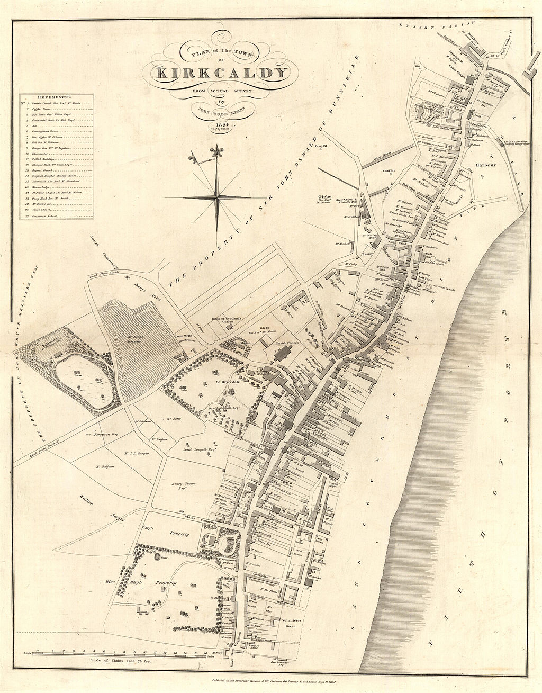

Kirkcaldy being a very small town in a relatively unimportant part of the world, somewhat unsuprisingly, has very little intereesting history. There are "11 Bronze Age cist burials" which date all the way back to 2500BC which tells us that 1. Kirkcaldy has been at least known of as an area for a while, and 2. it was a funerary site. The first recorded document recognising the town was issued in the Medieval era in 1075. It was issued when the King od Scots granted what was at the time the shire of Kirkcaldunt to the Chuch at Dunfermline. In 1363 a Charter was granted by David II, King of Scots, which allowed for the now burgh to trade with the other 3 burghs Queensferry, Dunfermline and Musselburgh.
At the turn of the 16th Century the town started to becomen and important trading port due it's location on the east coast of the UK, not yet unified, which facilitated trading with the Low countries, Baltic Regions, and other important trading areas. Raw materials such as wools, skins, herring, and coal some of the towns main exports while spice and wine from Spainish ports began t flow through the region. It was also offically granted royal burgh status in 1644. Civil war, however, killed many from the area and importantly for the town destroyed destroyed many of its trading vessels. Fortunately it began to recover towards the end of the 17th century due to growth in its manufacturing sector. A further shipbuilding revival also aloowed the town to produce more trading vessels.
A map of old Kirkcaldy
Credit for Information and Images